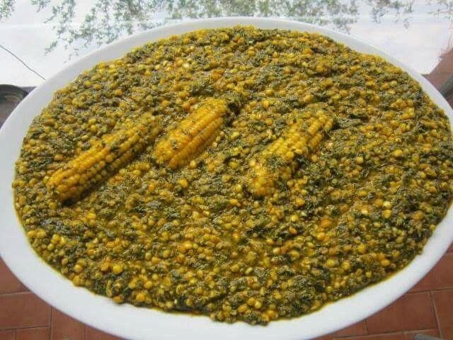
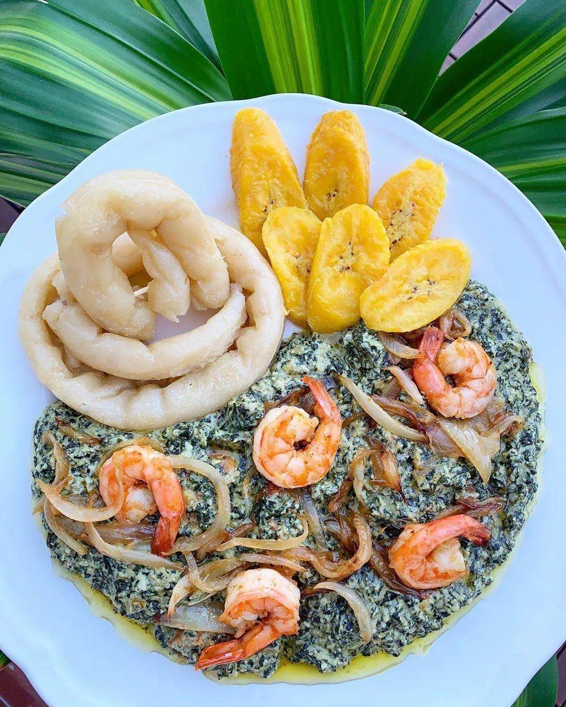
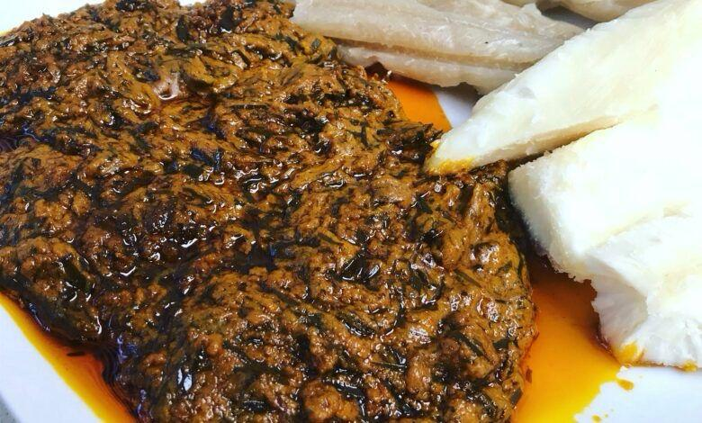
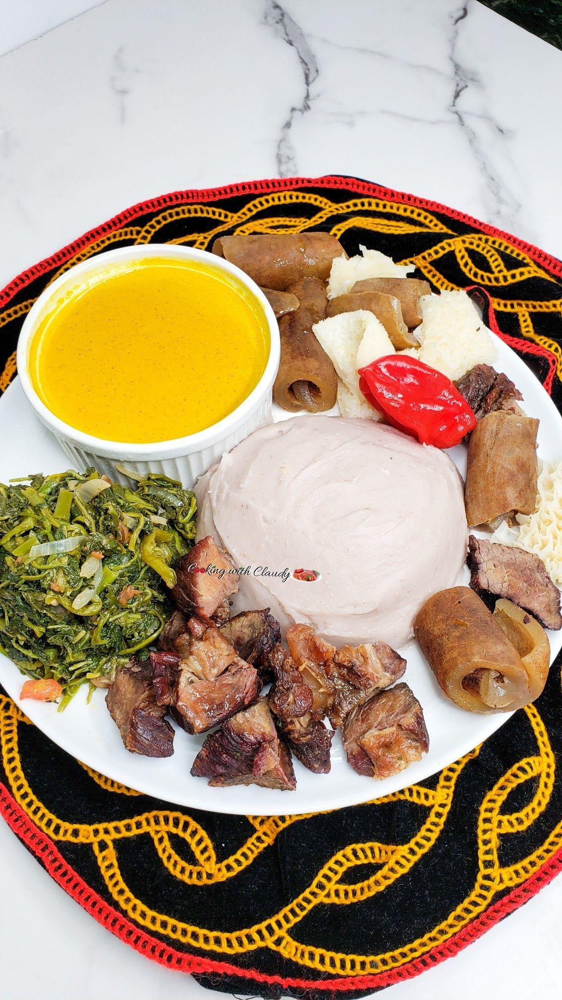
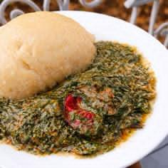
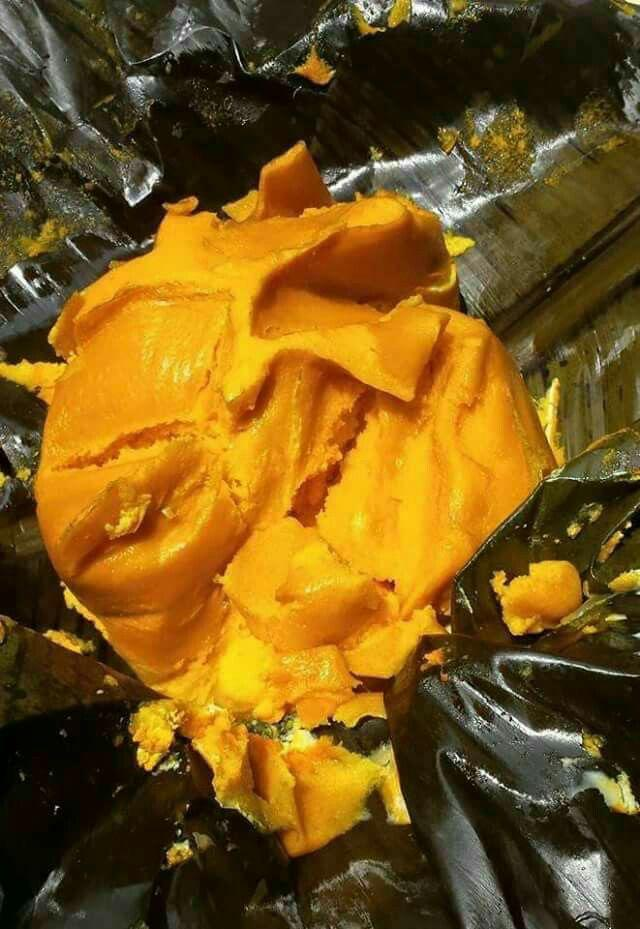
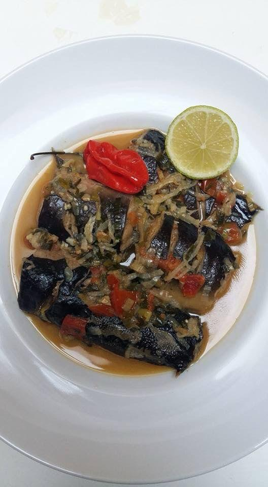
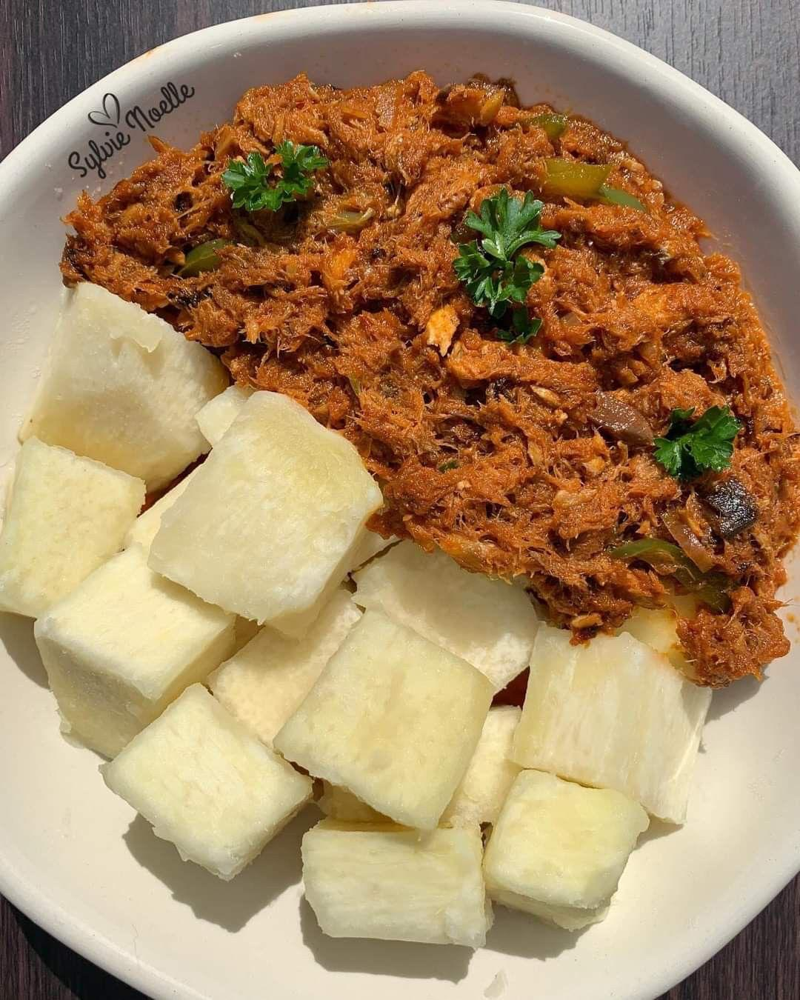
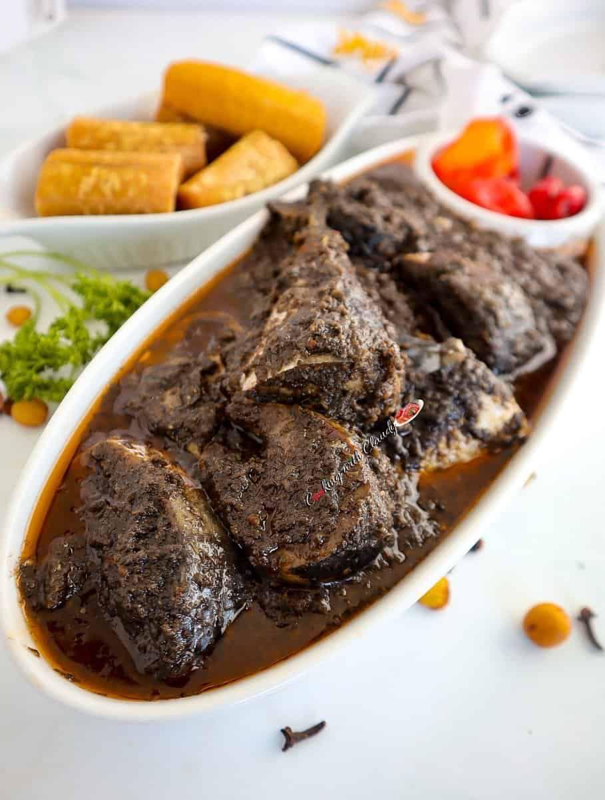

A full-stack platform for digitizing, preserving, and discovering traditional recipes from African and Cameroonian culinary traditions.
TasteCam-Heritage is a web-based application designed to digitize, preserve, and promote culinary heritage. Food is one of the most powerful expressions of culture and identity — yet traditional recipes risk being lost as communities modernize.
This project addresses that challenge by providing a structured, searchable, community-driven platform where users can discover, share, and archive traditional recipes from diverse cultural backgrounds, with a particular focus on African and Cameroonian culinary traditions.
Explore the TasteCam-Heritage platform showcasing traditional African dishes.
A traditional Cameroonian dish made with eru leaves, waterleaf, palm oil, and assorted meats or fish. It is commonly served with garri and enjoyed across the Southwest and Northwest regions.

A flavorful meal prepared from fresh maize, cocoyam leaves, and palm oil. This nutritious dish is especially popular in the coastal regions of Cameroon.

One of Cameroon’s most famous dishes, prepared with bitterleaf, groundnuts, spices, and your choice of meat, fish, or shrimp. It is traditionally served with cassava sticks and fried plantains.

A traditional forest-region delicacy made from finely ground okok leaves mixed with peanuts, palm oil, and seasonings. It is commonly enjoyed with cassava sticks.

A beloved Grassfields dish consisting of pounded cocoyams served with a rich yellow soup, meat, fish, cow skin, and traditional spices.

A traditional dish from the East Region of Cameroon, prepared with wild forest vegetables and local seasonings. It is commonly served with cassava couscous.

A steamed bean cake made from blended black-eyed peas, palm oil, and spices. It is a popular and nutritious meal enjoyed throughout Cameroon.

A spicy and aromatic broth prepared with fresh catfish, local herbs, and traditional spices. It is appreciated for its rich flavor and comforting warmth.

A rich and creamy peanut-based sauce cooked with meat or fish and served with cassava. It is a favorite comfort meal in many Cameroonian households.

A traditional Cameroonian fish or meat stew prepared with blackened spices, creating its distinctive dark color and deep smoky flavor. It is commonly served with plantains or cassava.
TasteCam-Heritage follows an N-Tier architecture with clear separation of concerns across presentation, business logic, and data layers.
The full suite of modern tools and frameworks powering the TasteCam-Heritage platform.
"Culinary heritage represents centuries of cultural knowledge. TasteCam-Heritage fills the gap by providing a structured, searchable, and community-driven platform for culinary heritage preservation, built on robust and scalable software architecture principles."— Abomo Mvogo Therese Damaris, ICTU20241280